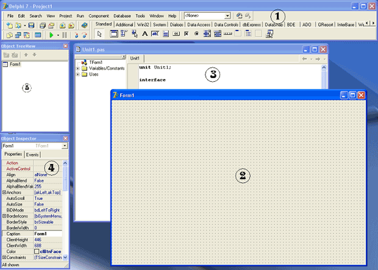

Первая программа
Традиционно при изучении программирования принято создавать первую программу, которая выводит текст "Hello, world!".
Не будем отступать от традиции и создадим программу, которая выводит этот текст тремя разными способами.
Но вначале познакомимся с самой средой программирования Delphi.
Предполагается, что на этот момент Delphi 7 уже установлена на вашем ПК.
Если это не так, то перед дальнейшим прочтением установите Delphi 7.
При загрузке Delphi 7 вы видите такую картину:
Познакомьтесь – это Delphi.
У нее есть много окон, панелей, компонентов.
С большинством из них мы познакомимся со временем, а пока нам нужно обратить внимание на 5 окон:
Главное окно Delphi.
Здесь находится основное меню, различные панели инструментов и палитра компонентов, состоящая из множества вкладок.
Конструктор формы.
Здесь мы визуально видим, как будет выглядеть форма программы, здесь мы будем создавать интерфейс, перенося на форму различные компоненты, и расставляя их таким образом, чтобы интерфейс выглядел привлекательным.
Нам часто придется переключаться между конструктором форм и редактором кода, делается это клавишей F12.
Редактор кода.
Здесь мы видим исходный код программы, который создан самой Delphi.
Тут же мы будем вводить наш собственный код.
Объектный инспектор.
Он предназначен для управления объектами проекта и состоит из двух вкладок – Properties (Свойства) и Events (События).
Дерево объектов.
Здесь мы видим, какой именно объект в данный момент является текущим.
Это окно будет особенно полезно, когда на форме появится множество компонентов.
Когда открывается Delphi, она автоматически создает и отображает новый проект (программу).
На рисунке вы видите проект, который содержит только одну стандартную форму.
Форма – это тоже объект, который представляет собой окно программы.
Чтобы программа делала что-то полезное, нам придется вносить изменения в нее.
Выведем текст "Hello, world!" первым способом.
Для этого в инспекторе объектов найдите свойство Caption.
В данный момент текущим является объект – форма, и свойство Caption формы отвечает за надпись на системной строке программы (синяя полоса вверху любого программного окна).
По умолчанию, свойство Caption содержит надпись "Form1", также называется и сама форма.
Измените эту надпись на "Hello, world!" (конечно, без кавычек).
Уже в процессе ввода текста вы видите, что надпись в системной строке принимает новый вид.
Мы ввели этот текст одним способом.
Теперь нам нужно сохранить проект.
Проект – совокупность файлов разных форматов, из которых создается программа.
Об этом мы подробней поговорим в одной из следующих лекций, а пока запомните правило – каждую программу (проект), которую вы создаете, нужно сохранять в отдельной папке.
Если вы все проекты станете сохранять в одну папку, то очень скоро запутаетесь.
Чтобы сохранить проект, выполним следующие действия:
1) Выбираем команду меню "File – Save All" (сохранить все), либо нажимаем горячие клавиши <Shift+Ctrl+S>.
2) Затем выходит окно с предложением сохранить модуль – текстовый файл с исходным кодом, принадлежащий форме.
Файл имеет расширение *.pas.
Имеем в виду, что каждый проект сохраняется в отдельную папку, поэтому вначале щелкнем правой кнопкой мыши по свободному месту окна с папками, и выберем команду "Создать - Папку".
Дадим папке какое-либо имя, например, "01".
После создания папки открываем ее.
3) Далее в поле "Имя файла" укажем имя сохраняемого модуля.
Имя может быть любым, но обязательно латинскими символами.
Еще имя модуля не должно совпадать с именем формы.
Обычно, имена формам и модулям стараются давать информативными, то есть, по имени можно будет догадаться, что это за файл.
Поскольку это главная форма проекта, дадим ей имя "Main", и нажмем кнопку "Сохранить".
4) Затем нам будет предложено дать имя проекту в целом.
Имя проекта будет совпадать с именем исполняемого программного файла.
Если мы хотим, к примеру, получить файл "hello.exe", то дадим проекту имя "hello". Нажмем кнопку "Сохранить".
Далее нам необходимо скомпилировать программу, то есть, перевести исходный код в выполняемый exe-файл.
Для этого мы можем выбрать команду меню "Run - Run", либо нажать горячую клавишу F9, либо нажать кнопку "Run" на панели инструментов (на кнопке изображение зеленой стрелки, указывающей вправо).
В результате, программа была не только скомпилирована, но и запущена.
Если вы посмотрите на системную строку Delphi, то увидите надпись "Delphi 7 – hello [Running]", а окна инспектора объектов и дерева объектов исчезли.
Это говорит о том, что программа находится в режиме выполнения.
Выполняемая программа имеет точно такой же вид, как наша главная форма, только на форме отсутствует точечная сетка, предназначенная для облегчения дизайна.
Окно полученной программы содержит все стандартные кнопки Windows – программы.
Щелкнув по красному крестику в правой верхней части окна, закройте программу (но не Delphi), и вы увидите прежнюю форму.
Обратите внимание, что свойства в Объектном Инспекторе принадлежат выделенному в данный момент компоненту.
Выделяются компоненты простым щелчком мыши.
Имейте в виду, что щелкать нужно один раз.
Двойной щелчок создаст обработчик события – процедуру.
Если вы ошибочно создадите таким образом процедуру, то просто сохраните проект, ничего в нее не вписывая – при сохранении последние пустые процедуры автоматически удаляются.
Удалять их вручную не рекомендуется.
Попробуем второй способ.
Обратите внимание на Палитру компонентов.
Текущей является вкладка Standard, и на ней находится множество значков – компонентов.
Когда вы подводите указатель мыши к какому-либо компоненту, через некоторое время выскакивает подсказка с именем компонента.
Нам нужен компонент Label, который представлен на вкладке в виде кнопки с изображением жирной буквы "А".
Щелкните по этой кнопке, затем щелкните по свободному месту на форме, чтобы вставить компонент.
Лучше, если вы расположите его ближе к левому верхнему краю формы.
Компонент Label появился на форме.
Этот компонент представляет собой обычную надпись.
Сейчас он выделен, и содержит надпись по умолчанию, - "Label1".
Теперь объектный инспектор показывает свойства этого компонента, а не формы.
Label также имеет свойство Caption, которое вы можете изменить в Инспекторе объектов.
Найдите это свойство, и вместо "Label1" впишите "Hello, world!".
Текст в компоненте Label изменился.
Если вам не нравится место, в котором оказался компонент, вы можете перетащить его мышью на другое место.
Кроме того, точное местоположение компонента вы можете задать, если выделите его, и будете нажимать клавиши перемещения курсора, удерживая при этом клавишу <Ctrl>.
Теперь попробуйте еще одно свойство компонента Label – свойство Font (шрифт).
Найдите это свойство в инспекторе объектов, и выделите его.
Справа появится кнопочка с тремя точками, нажмите ее.
Откроется стандартное окно выбора шрифта.
Здесь вы можете выбрать имя шрифта, его размеры, начертание (например, жирный курсив) и цвет текста.
Поэкспериментируйте с размером компонента, его положением и шрифтом.
Почти все компоненты, с которыми нам придется иметь дело, имеют эти свойства, так что в дальнейшем вам будет легче осваивать новый компонент.
Снова сохраните проект и нажмите кнопку Run (или <F9>).
Убедитесь, что надпись появилась на форме, после чего закройте программу (но не Delphi) и вернитесь к форме.
Попробуем третий, немного более сложный способ.
Пока что мы создавали программу, не написав ни единой строки кода.
Мы занимались только дизайном, все остальные трудности Delphi взяла на себя.
Теперь попробуем вывести это же сообщение, как только пользователь нажмет кнопку на форме.
Для начала нужно установить на форму кнопку.
Этот компонент также находится на вкладке Standard палитры компонентов, и выглядит как кнопочка с надписью "ОК".
При наведении на него указателя мыши выскакивает подсказка "Button".
Щелкнув по компоненту, щелкните затем по тому месту на форме, где вы хотели бы видеть эту кнопку.
Изменим надпись на кнопке.
Убедитесь, что кнопка выделена, и найдите в инспекторе объектов ее свойство Caption.
Замените надпись "Button1" на "Нажми меня!".
Если надпись не умещается на кнопке, вы можете растянуть кнопку мышью, или использовать для этого клавиши управления курсором с нажатой кнопкой <Shift>.
Далее нам нужно создать обработчик нажатия на кнопку.
Обработчик представляет собой процедуру, в которой мы будем писать наш код.
Этот код будет выполняться программой всякий раз, когда пользователь нажмет на эту кнопку.
Чтобы создать этот обработчик, следует дважды нажать на кнопку на форме.
Вы сразу попадаете в редактор кода и видите, что процедура уже создана, курсор мигает в том месте, где мы должны ввести свой код.
Пока что не будем разбираться, что тут к чему, а просто впишем строку:
ShowMessage('Hello, world!');
Полный текст процедуры получится такой:
procedure TForm1.Button1Click(Sender: TObject);
begin
ShowMessage('Hello, world!');
end;
Если у вас так и получилось, сохраните проект, откомпилируйте его и запустите на выполнение.
При нажатии на кнопку будет появляться указанная надпись.
Мы создали полноценную программу, выводящую надпись "Hello, world!" тремя различными способами, вписав при этом лишь одну строку исходного кода!
Полученный файл hello.exe находится в указанной вами папке
C:\Program Files\Borland\Delphi7\Projects\01
При сохранении проекта вы можете указывать и другие папки, и проект будет сохранен по указанному адресу.
Полученный программный файл hello.exe вы можете теперь распространять, например, переслать другу, чтобы он полюбовался вашими достижениями.